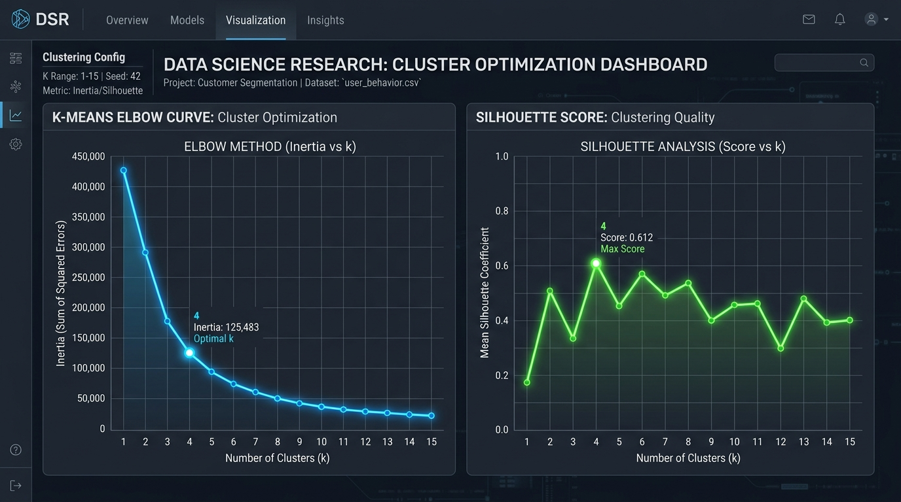

A rigorous data-driven approach coupling air quality observations with meteorological features to discover naturally occurring pollution-weather zones across Delhi NCR.
| Pollutant | Unit | Source |
|---|---|---|
| PM2.5 | μg/m³ | CPCB CAAQMS |
| PM10 | μg/m³ | CPCB CAAQMS |
| NO₂ | μg/m³ | CPCB CAAQMS |
| SO₂ | μg/m³ | CPCB CAAQMS |
| CO | mg/m³ | CPCB CAAQMS |
| O₃ | μg/m³ | CPCB CAAQMS |
| Parameter | Unit | Source |
|---|---|---|
| Temperature | °C | IMD / Co-located |
| Relative Humidity | % | IMD / Co-located |
| Wind Speed | m/s | IMD / Co-located |
| Barometric Pressure | hPa | IMD / Co-located |
| Visibility | km | IMD / Co-located |
| Station | Location | Zone Type | Cluster |
|---|---|---|---|
| Anand Vihar | 28.64°N, 77.31°E | Traffic-Industrial | Cluster 1 |
| RK Puram | 28.56°N, 77.18°E | Residential | Cluster 0 |
| Punjabi Bagh | 28.67°N, 77.12°E | Residential-Traffic | Cluster 0 |
| Nehru Nagar | 28.56°N, 77.25°E | Industrial | Cluster 1 |
| Okhla Phase 2 | 28.53°N, 77.27°E | Industrial | Cluster 1 |
| Noida Sector 62 | 28.62°N, 77.36°E | IT-Residential | Cluster 0 |
| Ghaziabad Loni | 28.74°N, 77.28°E | Industrial | Cluster 1 |
| Faridabad Sec 16 | 28.40°N, 77.31°E | Industrial | Cluster 1 |
| Gurugram Manesar | 28.35°N, 76.93°E | Industrial | Cluster 1 |
| Gurugram Sec 51 | 28.45°N, 77.02°E | IT-Commercial | Cluster 0 |

PM2.5: 0–1500 μg/m³
WS: 0–30 m/s
Temp: −5–50°C
Station-wise median for <2% missing values. No extrapolation.
Applied to all 6 pollutant features to reduce right-skewness from extreme episodes.
Scales using median and IQR. Resistant to outliers from Severe+ AQI events.